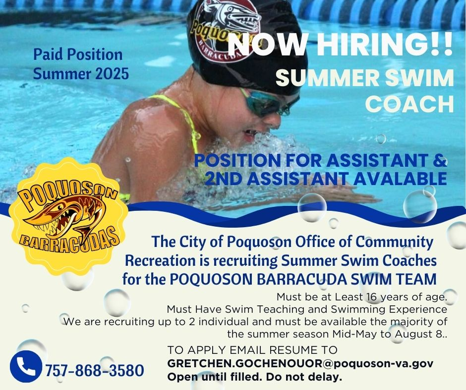

Are you a passionate swim coach looking for an exciting opportunity to lead and inspire a team of dedicated athletes? Do you have a knack for cultivating a positive and supportive environment where swimmers can thrive? Elizabeth Lake swim team in Hampton is seeking a Head Coach and Assistant Coaches for the upcoming summer season!
About Us: Our swim team is located near the Fox Hill are in Hampton. We take pride in our commitment to fostering a welcoming and inclusive environment where swimmers of all ages and abilities can develop their skills and love for the sport. Our team values sportsmanship, camaraderie, and personal growth both in and out of the pool.
Positions Available:
Qualifications:
If you're ready to make a splash as part of the Elizabeth Lake coaching team, please contact Vanessa Smeltzer at azsmeltzer@gmail.com
Don't miss out on this fantastic opportunity to lead and inspire young swimmers in our community! We look forward to welcoming enthusiastic coaches to the Elizabeth Lake pool family.
Are you enthusiastic, love to teach and love the water? Come be a swim coach for Kiln Creek Dolphins this summer. We are currently looking to hire Assistant Coaches and Junior coaches this summer.
About us: Kiln Creek Dolphins is a dedicated swim program nestled in the Kiln Creek Homeowners association in Yorktown/Newport News. This community has 21 villages and is home to the Kiln Creek Dolphins.
Position is responsible for assisting the head and junior assistant coaches with organizing the Kiln Creek Swim Team Inc. program. Position assists with conducting practices, motivating swimmers, and instructing athletes in strategies and techniques.
Position is responsible for assisting the head and assistant coaches with organizing the Kiln Creek Swim Team Inc. program. Position assists with conducting practices, motivating swimmers, and instructing athletes in strategies and techniques
If you want to have a great opportunity and a fun summer coaching, please contact Justin Hinson: justin.r.hinson3@gmail.com.
Are you a passionate swim coach looking for an exciting opportunity to lead and inspire a team of dedicated athletes? Do you have a knack for cultivating a positive and supportive environment where swimmers can thrive? Marlbank Pool in York County is seeking both a Head Coach and Assistant Swim Coaches for the upcoming summer season!
About Us: Marlbank Pool is a vibrant community hub nestled in the heart of York County. We take pride in our commitment to fostering a welcoming and inclusive environment where swimmers of all ages and abilities can develop their skills and love for the sport. Our team values sportsmanship, camaraderie, and personal growth both in and out of the pool.
Positions Available:
Qualifications:
If you're ready to make a splash as part of the Marlbank Pool coaching team, please contact Jennifer Long.
Don't miss out on this fantastic opportunity to lead and inspire young swimmers in our community! We look forward to welcoming enthusiastic coaches to the Marlbank Pool family. Let's make waves together!

Are you passionate about swimming and coaching? Do you have a knack for motivating young athletes to reach their full potential? If so, we want YOU to join our team as an Assistant Swim Coach for the 2025 summer season with the Riverdale Rays in Hampton!
About Us: The Riverdale Rays are a dynamic and dedicated swim team located in the heart of Hampton. We pride ourselves on fostering a supportive and inclusive environment where swimmers of all skill levels can thrive. Our team is committed to excellence both in and out of the pool, promoting sportsmanship, teamwork, and personal growth.
Position Overview: As an Assistant Swim Coach, you will work closely with our Head Coach to develop and implement training programs, provide technique instruction, and inspire our athletes to achieve their goals. This role offers a fantastic opportunity to gain valuable coaching experience, make a positive impact on young lives, and become an integral part of our tight-knit swim community.
Qualifications:
If you're ready to dive into a rewarding coaching opportunity with the Riverdale Rays, please email the GPSA Representative, Heather Rowe.
Don't miss out on this exciting chance to make a splash as part of our coaching staff! We look forward to welcoming you aboard the Riverdale Rays family. Go Rays!